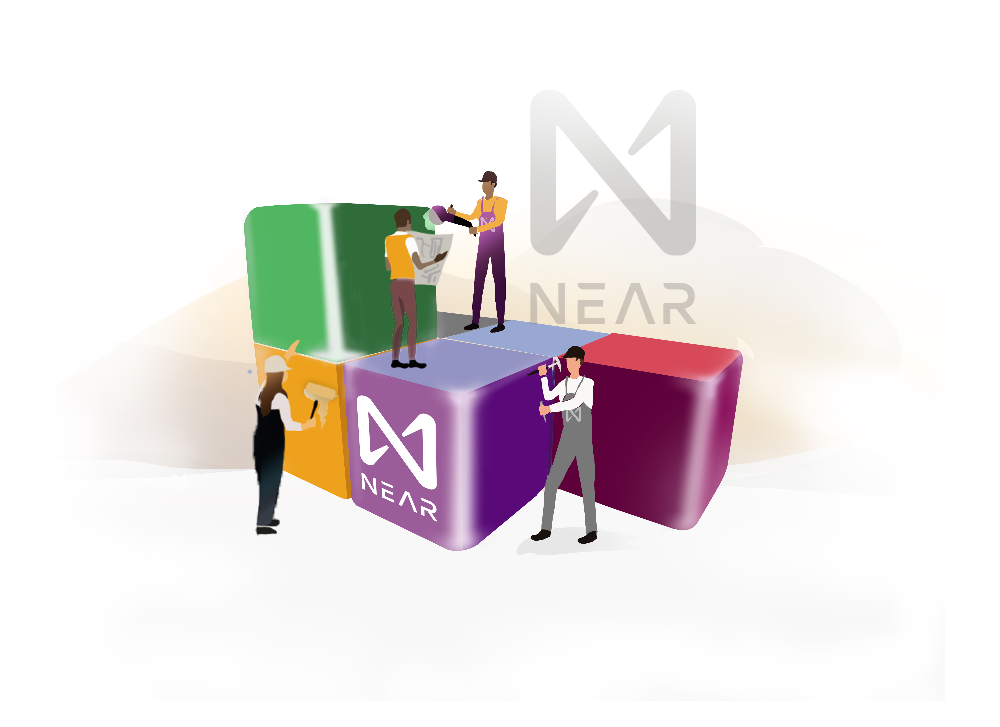
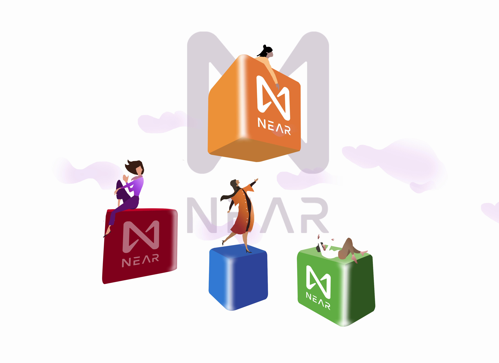
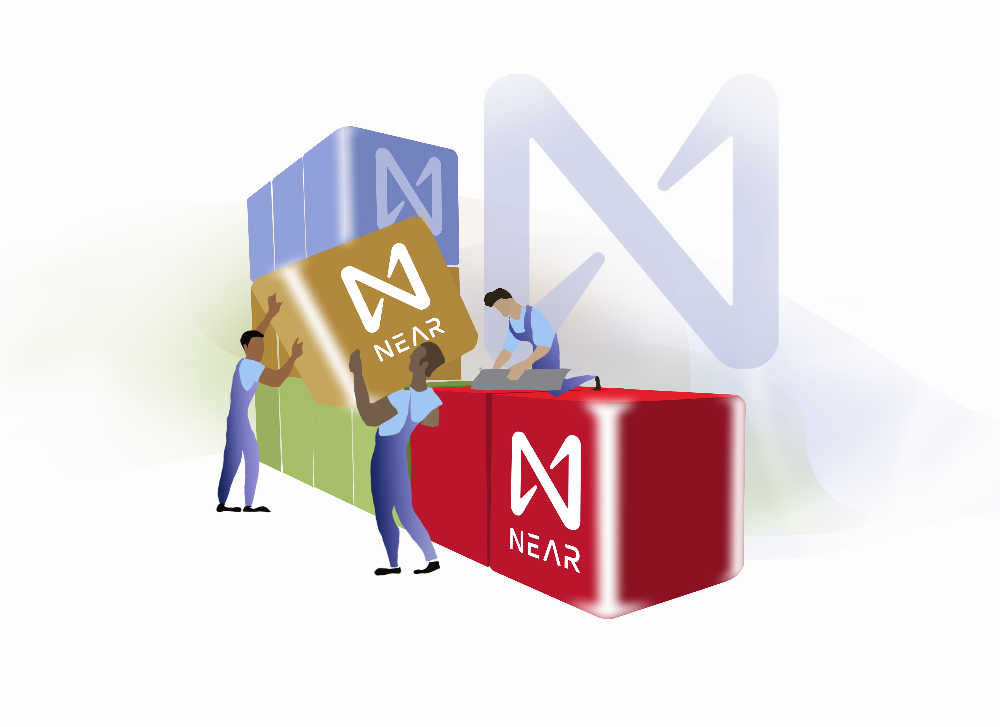
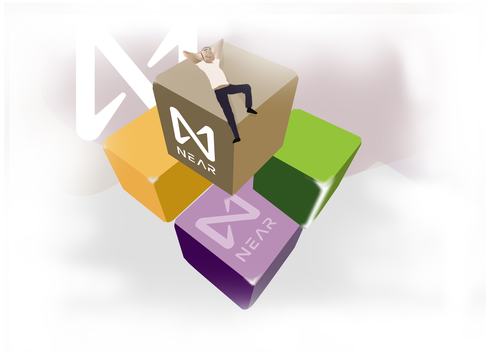

NEAR provides a community-operated cloud-based infrastructure for deploying and running dapps by combining
the features of a decentralized database with a serverless computing platform. The NEAR token, which allows
this platform to run, also enables applications built on it to interact with each other. NEAR provides a
community-operated cloud-based infrastructure for deploying and running dapps by combining the features of a
decentralized database with a serverless computing platform. features of a decentralized database with a
serverless computing platform.
NEAR provides a community-operated cloud-based infrastructure for deploying and running dapps by combining
the features of a decentralized database with a serverless computing platform. The NEAR token, which allows
this platform to run, also enables applications built on it to interact with each other.

NEAR provides a community-operated cloud-based infrastructure for deploying and running dapps by combining
the features of a decentralized database with a serverless computing platform. The NEAR token, which allows
this platform to run, also enables applications built on it to interact with each other.

NEAR provides a community-operated cloud-based infrastructure for deploying and running dapps by
combining the features of a decentralized database with a serverless computing platform. The NEAR token,
which allows this platform to run, also enables applications built on it to interact with each other.
NEAR provides a community-operated cloud-based infrastructure for
deploying and running dapps by combining the features of a decentralized database with a serverless
computing platform.
The NEAR token, which allows this platform to run, also enables applications
built on it to interact with each other.

NEAR provides a community-operated cloud-based infrastructure for deploying and running dapps by combining
the features of a decentralized database with a serverless computing platform.
The NEAR token, which
allows this platform to run, also enables applications built on it to interact with each other.
NEAR provides a community-operated cloud-based infrastructure for deploying and running dapps by combining
the features of a decentralized database with a serverless computing platform.
The NEAR token, which
allows this platform to run, also enables applications built on it to interact with each other.

NEAR provides a community-operated cloud-based infrastructure for deploying and running dapps by
combining the features of a decentralized database with a serverless computing platform.
The NEAR
token, which allows this platform to run, also enables applications built on it to interact with each
other.